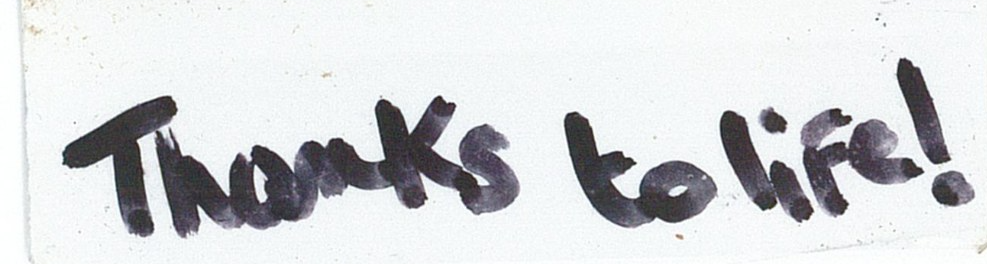
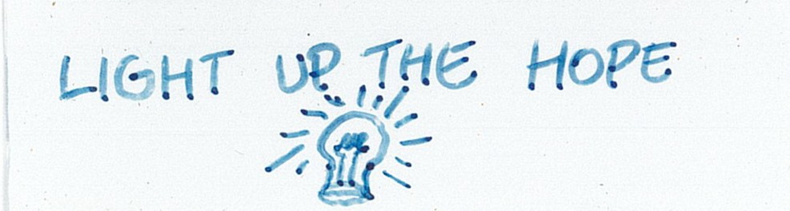
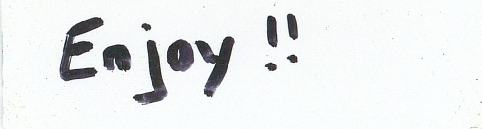

Some of the most important things I have learned were taught to me by people I had never met before.
The People Who Taught MeInvite this participatory exhibition project into your gallery, museum, cultural institution or independent space.
For nearly three years, I opened my home to strangers. We shared meals, stories, conversations and moments of our lives. I kept Polaroids and the words they chose to leave behind.
What began with a simple invitation became an archive of human encounters — a work made not only of photographs and memories, but of hospitality, trust, curiosity and time. I had no interest in collecting people. I wanted to learn from them. Because every person knows something I do not. And because I believe that our lives become richer when we make room for one another.
Hundreds of evenings, one open door. The faces belong to those who were there.
Faces remain in the physical archive. Here, only the words.

« Thanks to life! »
« Light up the hope »
« Enjoy !! »I believe intelligence is not only something we possess individually. It also emerges between us. In our conversations. In our disagreements. In the stories we share. In our willingness to listen.
To be of service to one another is to recognize that we all have something to offer — and something to receive. We are not meant to understand everything alone.